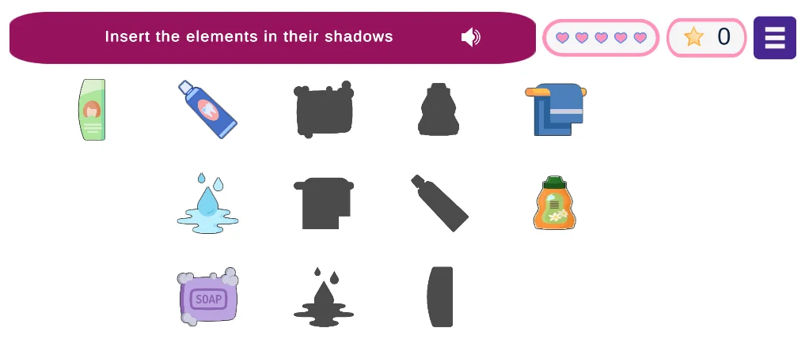

Summary
RUFUS is a platform where education and health professionals create personalized digital games for their students and patients, without programming. This study evaluated the web interface for creating a new game, designed to exercise computational thinking in children with Autism Spectrum Disorder (ASD).
The educators managed to create the game from start to finish. Observing the sessions revealed eight friction points that the questionnaires would not have shown, and all of them became recommendations for the development team.
Context


On the platform, the child is not the one who creates the game. The educator is, because she knows each student and adapts the content to their needs. That is why educators are the primary users of the web interface, and the child plays later, in the mobile app.
The game "Our Routine" uses everyday activities (waking up, taking a shower, brushing teeth) to work on four skills: pattern recognition, decomposition, algorithms and abstraction. It has three phases, each with three difficulty levels set by the educator.
As a volunteer at the institution, I closely followed the educators' routine. This helped me understand the real context of use and build trust with the participants.
Research question
Can educators without a computing background create and customize the game on their own in the web interface? Where do they run into difficulties?
Process
1. Preparation
The task reflected real use: creating a complete computational thinking game, with all three phases (pattern recognition, decomposition and sequencing).
2. Individual sessions of about 40 minutes each
- Consent form, profile questionnaire and authorization to use images and data.
- Task performed with think-aloud: the educator talked about what she was doing and thinking.
- Cognitive Barrier Walkthrough (CBW) questions at each action, to understand whether she noticed the correct action, associated it with the expected effect and felt she was making progress.
- Observation and recording of the interaction.
3. After the task
- SUS, for usability.
- SAM, for emotional response (valence, arousal and dominance).
- Semi-structured interview about using the game in the institution's reality.
4. Analysis
I organized the observed problems, the think-aloud comments and the interview remarks, and turned each point into an improvement recommendation.
Ethics: approved by the Research Ethics Committee, with informed consent and anonymized data.
Key findings
The numbers were positive, but they did not tell the whole story
Both educators completed the task and gave the highest scores on SUS and SAM. With two participants and ceiling scores, these numbers indicate acceptance, but they do not help find problems. The study's value came from observation.
Eight friction points in the interface
| What I observed | Recommendation |
|---|---|
| Fields came with prefilled text that had to be deleted before typing | Replace prefilled text with placeholders |
| When saving with empty required fields, nothing happened, and the educator did not know what had gone wrong | Show clear error messages |
| After saving a step, the fields stayed filled when starting the next one | Clear the fields automatically |
| The edit button was just a small pencil icon that was hard to find | Write "Edit" next to the icon |
| The save button had little emphasis | Make "Save" more visible |
| The term "Activity" was confusing in the decomposition phase | Replace it with "Group", a suggestion from the educators themselves |
| One participant could not find where to add the avatar image | Make the path clearer |
| Even knowing the game, the educators needed a reminder of what each level did | Add help, short videos or GIFs when creating levels |
What the interviews showed beyond the interface
- Pedagogical fit: the game suits children with ASD because complexity can be adjusted to each child's age and development.
- Infrastructure: the lack of tablets and up-to-date computers may limit use at the institution.
- Personalization: a built-in bank of images and sounds would make adapting games easier.
- Autonomy: tutorials and detailed instructions would help educators use the tool without support.
- Variety of themes: the same format could be used for other topics during the year, such as food and holidays.
Impact
The development team worked on the recommendations and moved forward with the mobile version of the game, which the children will use. The next step is to evaluate how the children interact with the game.
Limitations
- Two participants is an adequate sample to find early problems, but not to generalize.
- Limited session time prevented testing the sound feature.
- Research with inclusive education professionals requires adapting the protocol to each person's availability and routine.
What I learned
With few participants, what happens during the task is worth more than the questionnaire score. Both gave SUS its highest score and still got stuck at concrete points in the interface. Being inside the institution as a volunteer also made a difference: it helped me interpret the educators' remarks in light of their routine and real constraints.